Integrated Value
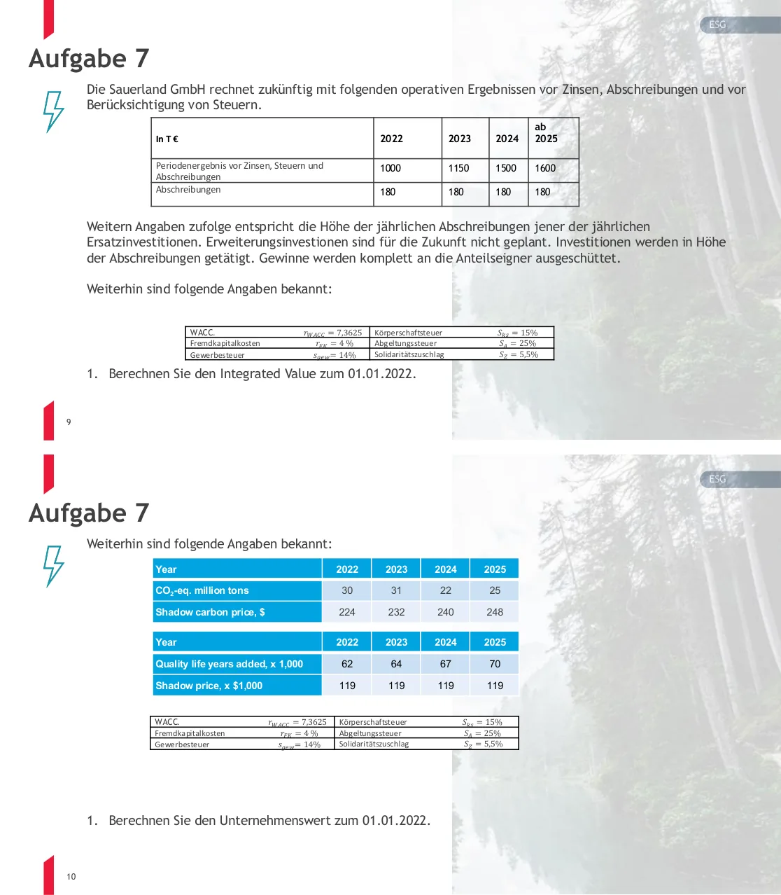
FV: EBIT = 820 | 970 | 1.320 | 1.420. s = 29,825 %. Wegen AfA = Investitionen: FCF = EBIT×0,70175 = 575,44 | 680,70 | 926,31 | 996,48. TV Ende 2024 = 996,48/0,073625. Abgezinst: FV = 12.811,7 T€.
EV: −CO₂×Preis = −672 | −719,2 | −528 | −620; mit 2 % inkl. TV: EV = −31.059,6 T€.
SV: QALY×119 = 737,8 | 761,6 | 797,3 | 833; mit 2 % inkl. TV: SV = 41.454,4 T€.
IV = FV+EV+SV = 23.206,5 T€. Positiv: integrierte Wertschaffung.
Offizielle Lösung
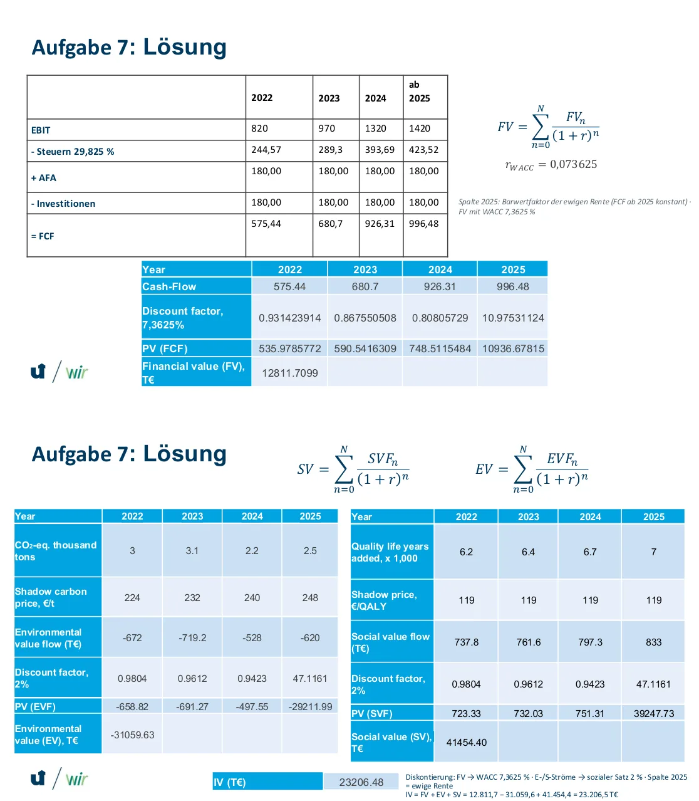
EU-Taxonomie-KPIs
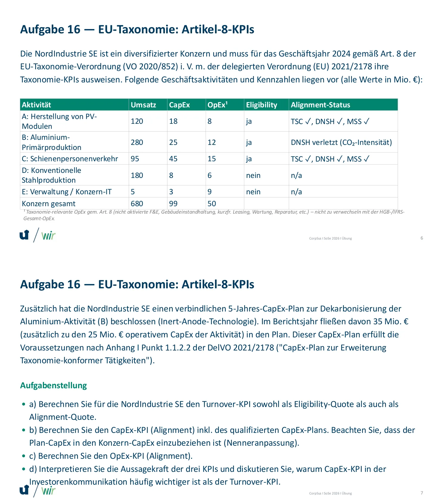
a) Turnover: Eligibility = (120+280+95)/680 = 72,8 %. Alignment = (120+95)/680 = 31,6 %; B fällt wegen DNSH heraus.
b) CapEx: Zähler = 18+45+35 = 98; Nenner = 99+35 = 134 → 73,1 %. Normales B-CapEx 25 nur im Nenner.
c) OpEx: (8+15)/50 = 46,0 %.
d) Turnover = heutiges Geschäft, OpEx = laufender Betrieb, CapEx = künftige Kapitalallokation. Die Lücke 72,8/31,6 % zeigt Transformationsbedarf; 73,1 % CapEx zeigt dessen Investitionsfinanzierung. CapEx ist für Investoren meist wichtiger, weil er zukunftsgerichtet ist.
Offizielle Lösung
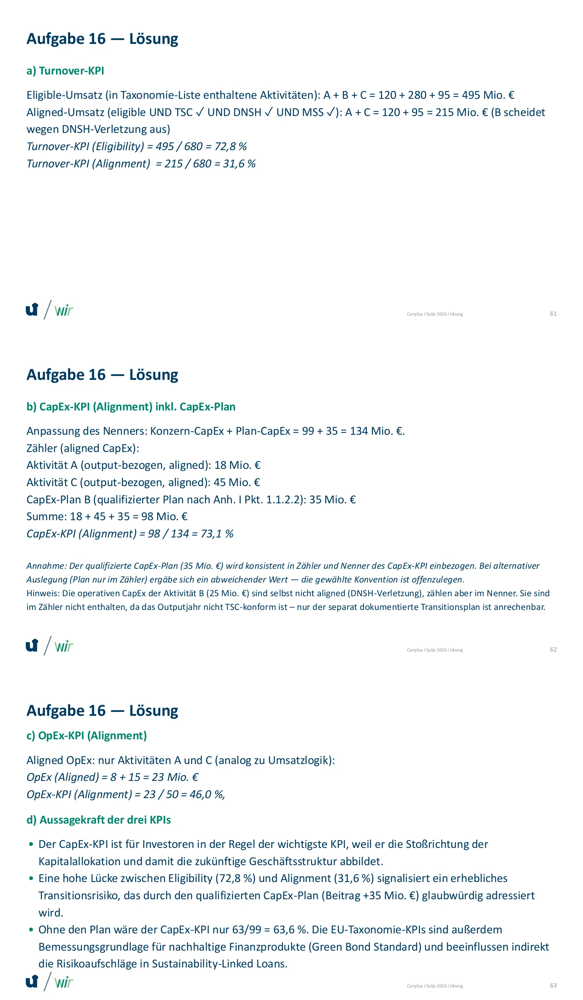
Doppelte Wesentlichkeit
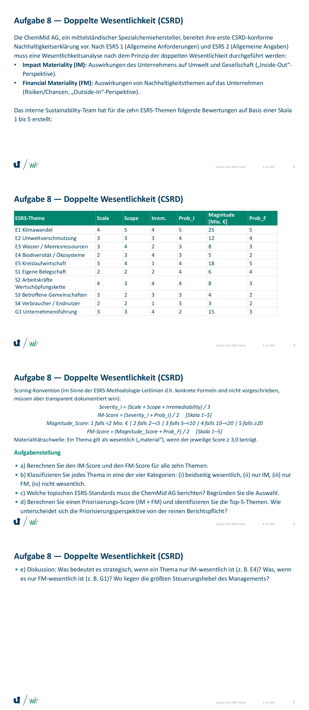
| Thema | IM | FM | Kategorie |
|---|---|---|---|
| E1 | 4,67 | 5,00 | beidseitig |
| E2 | 3,50 | 4,00 | beidseitig |
| E3 | 3,00 | 3,00 | beidseitig |
| E4 | 3,00 | 2,50 | nur IM |
| E5 | 3,33 | 4,50 | beidseitig |
| S1 | 3,00 | 3,50 | beidseitig |
| S2 | 3,83 | 3,00 | beidseitig |
| S3 | 2,83 | 2,00 | nicht wesentlich |
| S4 | 2,33 | 2,00 | nicht wesentlich |
| G1 | 2,67 | 3,50 | nur FM |
Berichten: E1–E5, S1, S2, G1. Nicht berichten: S3/S4; Nicht-Wesentlichkeit begründen.
Top 5 IM+FM: E1 9,67; E5 7,83; E2 7,50; S2 6,83; S1 6,50. Berichtspflicht = Ja/Nein; Priorisierung = Ressourcenreihenfolge.
Strategie: nur IM = eigene Außenwirkung, früh reduzieren; nur FM = finanziell betroffen, Risiko/Compliance/IKS stärken; beidseitig = höchster Handlungsdruck.
Offizielle Lösung
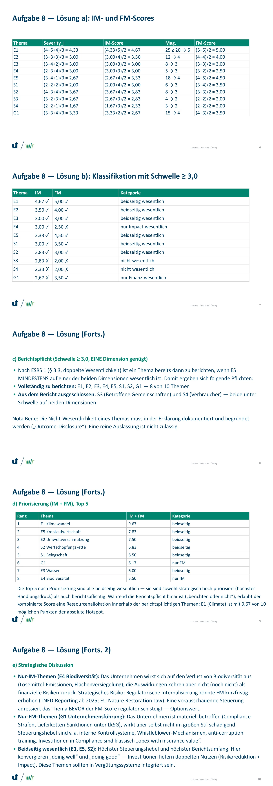
Implementierung
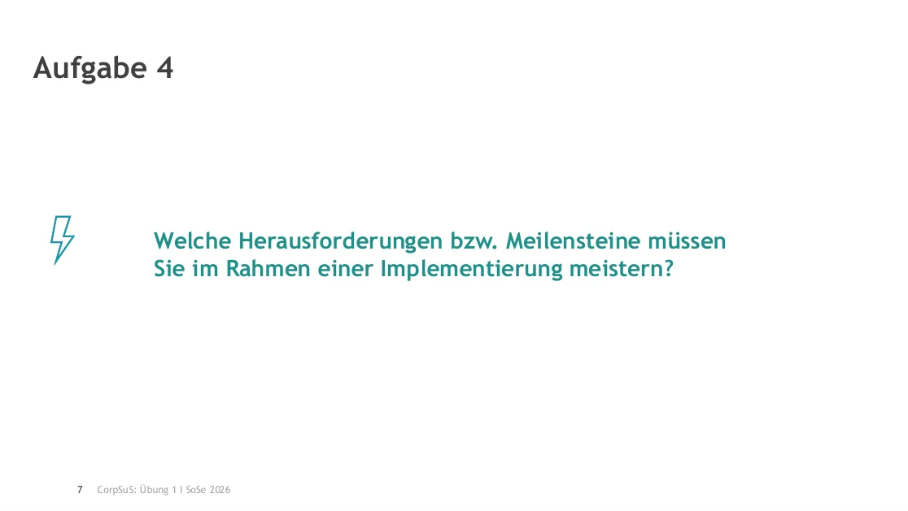
- Daten: einheitliche Definitionen, vollständige Erfassung inkl. Wertschöpfungskette/Konsolidierungskreis.
- Systeme & Prozesse: valide formalisierte Prozesse und standardisierte IT.
- Integration: finanzielle/nichtfinanzielle Informationen und kurz-/langfristige Ziele verbinden; cross-funktional arbeiten.
- Kontrollen: Nachhaltigkeits-IKS analog Rechnungslegungs-IKS; Interne Revision einbeziehen.
- Capacity Building: Training, Wissen, Fähigkeiten, Anleitung und Unterstützung.
Offizielle Lösung
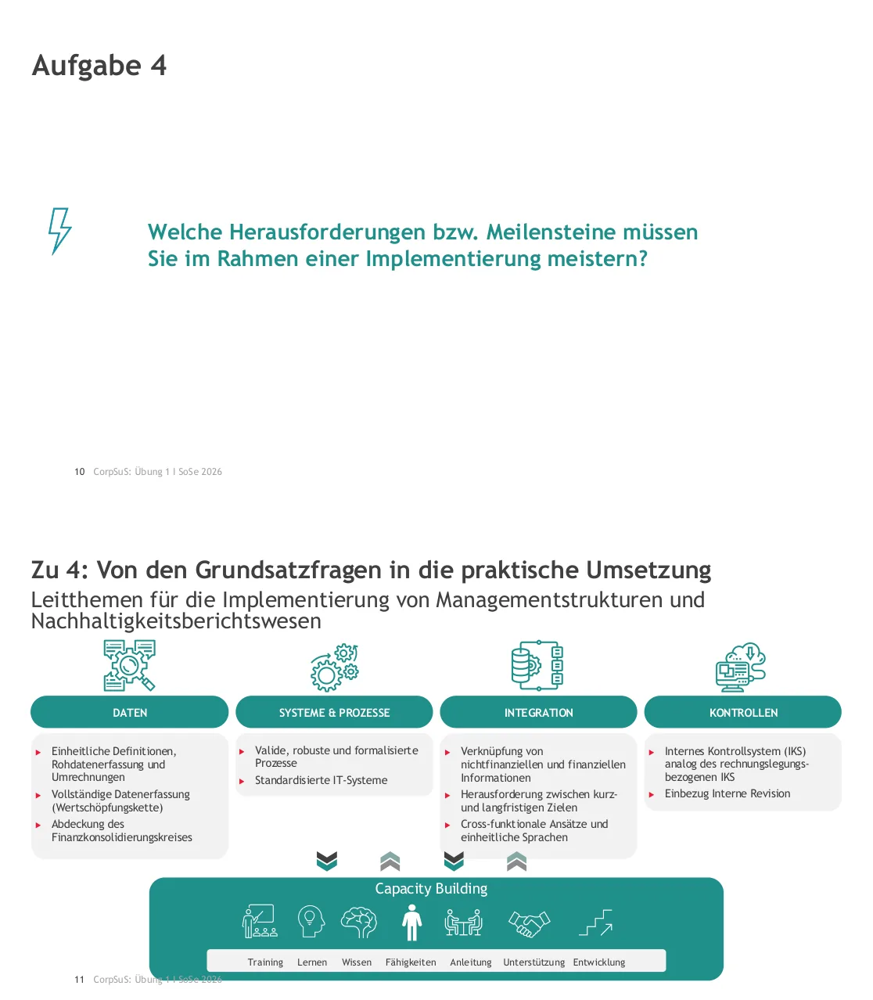
FCF, CAPM und WACC
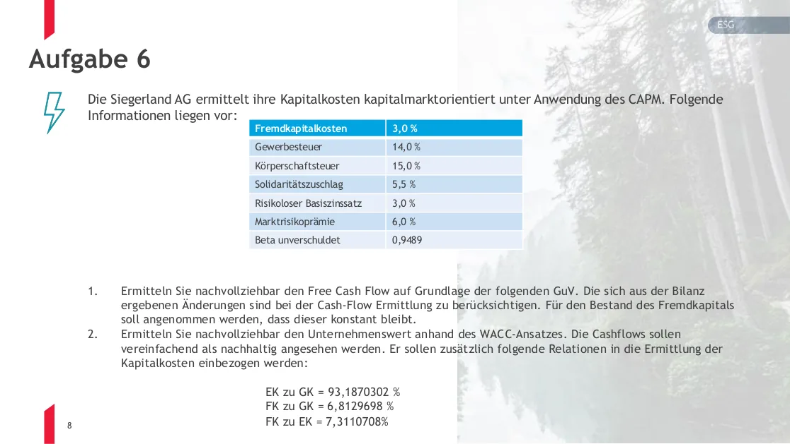
FCF: EBIT = EBT+Zins = 600. EBIT-Steuer 29,825 % = 178,95; NOPLAT 421,05. +AfA 300 +Rückstellungen 10 −Investitionen 300 −ΔForderungen 40 +Δunverzinsliche Verb. 30 → FCF = 421,05 T€.
Kapitalkosten: Für Beta/WACC nutzt die Musterlösung den Tax-Shield-Satz 26,325 %. βv = 0,9489×[1+(1−0,26325)×0,0731107] ≈ 1. rEK = 3 %+1×6 % = 9 %. WACC = 9 %×0,93187 +(1−0,26325)×3 %×0,06813 = 8,5374 %.
Werte: FV = 421,05/0,085374−336 = 4.595,82 T€. EV = −672/0,085374 = −7.871,23 T€. IV = −3.275,41 T€: finanziell positiv, integriert wertvernichtend.
Offizielle Lösung
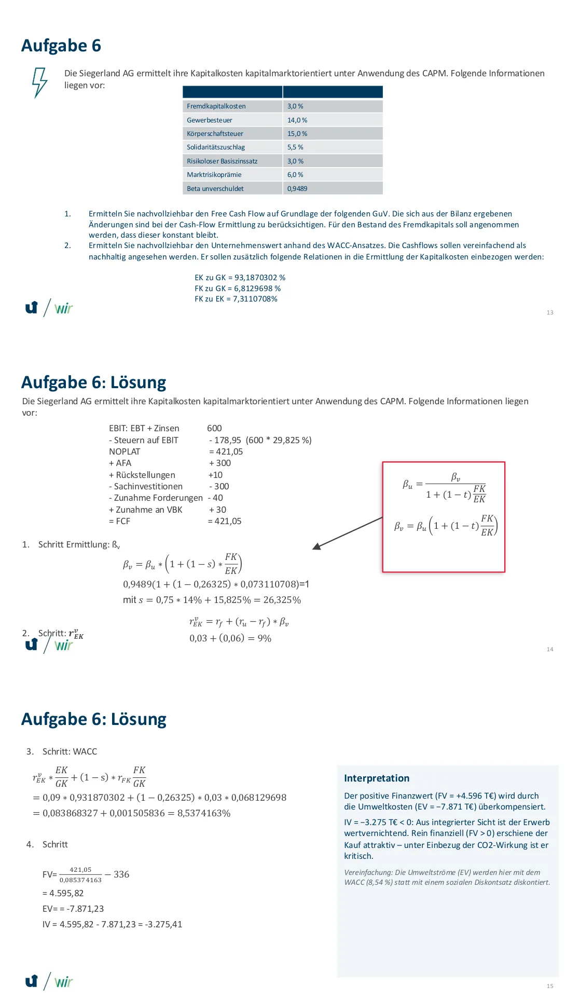
LCA: PET vs. Glas
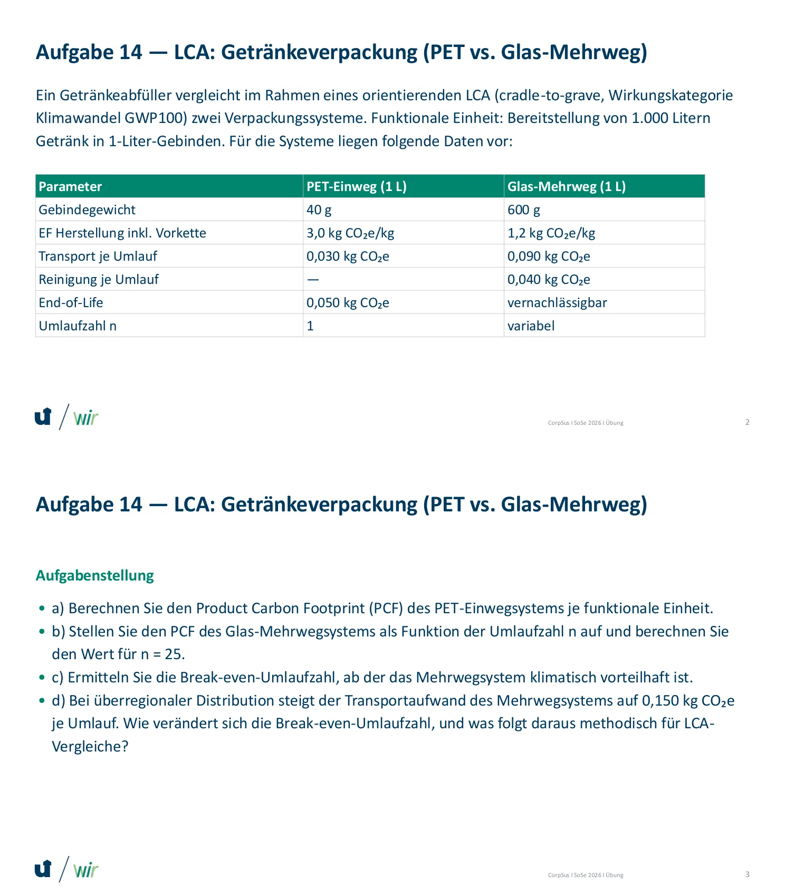
a) PET: 0,040×3,0+0,030+0,050 = 0,200 kg je Flasche; ×1.000 = 200,0 kg CO₂e/FU.
b) Glas: Herstellung 0,600×1,2 = 0,720. PCF(n)=0,720/n+0,130. n=25 → 0,1588 je Nutzung = 158,8 kg/FU.
c) 0,720/n+0,130=0,200 → n=10,29 → ab Nutzung 11 besser.
d) Neuer Transport: 0,720/n+0,190=0,200 → Break-even 72 Umläufe. Fazit: LCA hängt stark von Logistik, Umläufen und Systemgrenzen ab; Sensitivitätsanalyse nötig.
Offizielle Lösung
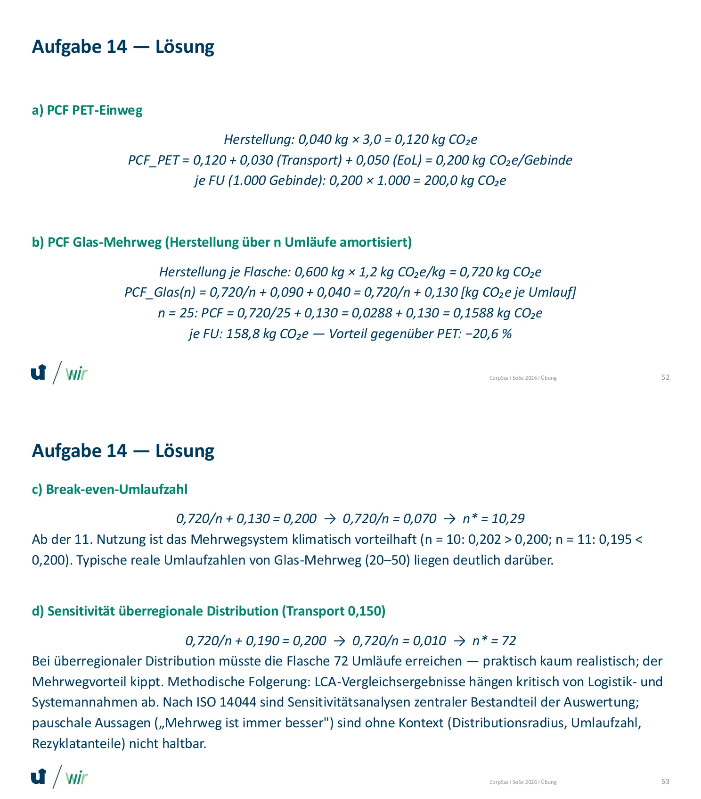
Stakeholder & Engagement
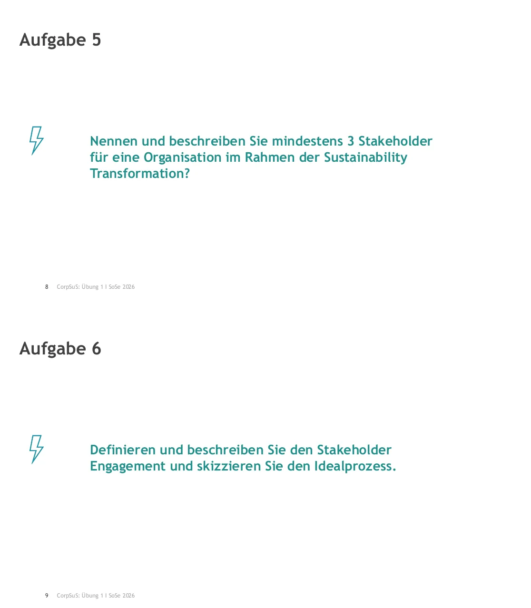
Stakeholder: Kunden verlangen Produkttransparenz und beeinflussen Umsatz; Investoren nutzen ESG-Daten für Kapitalentscheidungen; Mitarbeitende erwarten faire Bedingungen und beeinflussen Know-how; Gesetzgeber setzt Pflichten; NGOs/Presse beeinflussen Druck und Reputation.
Definition: Stakeholder Engagement ist der zielgerichtete Prozess, relevante Stakeholder zur Erreichung vereinbarter Ergebnisse einzubeziehen und über Entscheidungen, Handlungen und Performance Rechenschaft abzulegen.
Idealprozess: Zweck → Stakeholder → Themen/Umfang → informieren/beobachten → zuhören/diskutieren → einbinden/zusammenarbeiten → auswerten/zurückspiegeln; kontinuierlich.
Offizielle Lösung
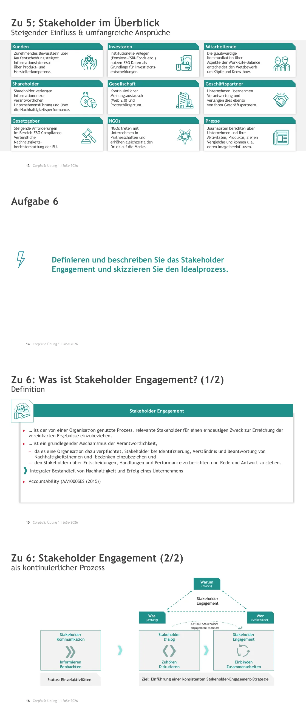
Green Bond & Greenium
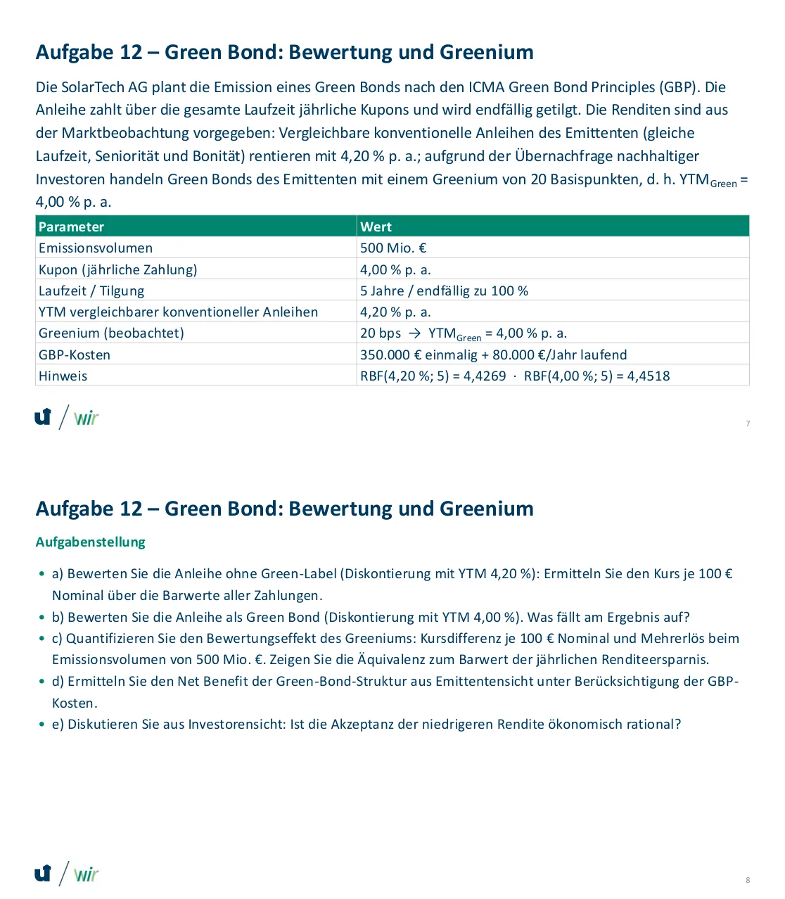
a) Ohne Label: P = 4×4,4269+100/1,042⁵ = 99,115 ≈ 99,11; unter pari, weil Kupon 4,00 % < YTM 4,20 %.
b) Green Bond: YTM = Kupon = 4,00 % → 100,00 (pari).
c) ΔP = 0,8854 je 100; Mehrerlös = 500 Mio.×0,8854 % = 4,427 Mio. €. Identisch zu 20 bps×500 Mio.=1 Mio./Jahr; PV = 1×4,4269.
d) PV Kosten = 0,350+0,080×4,4269 = 0,704 Mio. €. Net Benefit = 4,427−0,704 = 3,723 Mio. €.
e) Rational durch geringeres Transitionsrisiko, ESG-/Regulierungsmandate, Übernachfrage und Präferenznutzen; kritisch sind Additionality und Greenwashing.
Offizielle Lösung
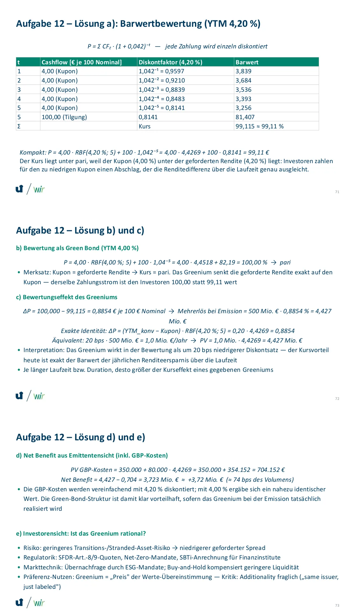